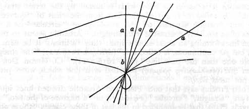

Aristotle, Proclus seems to have in mind the passage (De caelo I. 2, 268 b 17) where it is stated that “all motion in space, which we call translation (φορά), is (in) a straight line, a circle, or a combination of the two ; for the first two are the only simple (motions).”
For completeness it is desirable to add the substance of Proclus’ account of the classification of lines, for which he quotes Geminus as his authority.
Geminus’ first classification of lines.¶
This begins (p. 111, 1—9) with a division of lines into composite (σύνθετος) and incomposite (ἀσύνθετος). The only illustration given of the composite class is the “broken line which forms an angle” (ἡ κεκλασμένη καὶ γωνίαν ποιοῦσα) ; the subdivision of the incomposite class then follows (in the text as it stands the word “composite” is clearly an error for “incomposite”). The subdivisions of the incomposite class are repeated in a later passage (pp. 176, 27—177, 23) with some additional details. The following diagram reproduces the effect of both versions as far as possible (all the illustrations mentioned by Proclus being shown in brackets).
lines
│
┌──────────────────────────┴──────────────────────────┐
composite incomposite
(broken line forming an angle) │
┌─────────────────────────────────┴─────────────────────────────────┐
forming a figure not forming a figure
σχηματοποιοῦσαι or
or determinate indeterminate
ὡρισμέναι ἀόριστοι
(circle, ellipse, cissoid) and
extending without limit
ἐπ' ἄπειρον ἐκβαλλόμεναι
(straight line, parabola, hyperbola, conchoid)
The additional details in the second version, which cannot easily be shown in the diagram, are as follows :
(1) Of the lines which extend without limit, some do not form a figure at all (viz. the straight line, the parabola and the hyperbola) ; but some first “come together and form a figure” (i.e. have a loop), “and, for the rest, extend without limit” (p. 177, 8).

As the only other curve, besides the parabola and the hyperbola, which has been mentioned as proceeding to infinity is the conchoid (of Nicomedes), we can hardly avoid the conclusion of Tannery[1] that the curve which has a loop and then proceeds to infinity is a variety of the conchoid itself. As is